Target Pistol | Carrying Case | Spotting Scope | Ear and Eye Protection | Stop Watch | Scoring Aids | Tools | Cleaning Supplies | Targets | Ammunition | Reloading Equipment
When you think of the equipment required for a
competitor to excel in Bullseye Shooting, you might compare it to
any specialized sport. While you may only need the bare
essentials to get started in this sport, to become truly
competitive you will have to purchase some special equipment. For
example, a single hockey stick and a puck is all that a youngster
needs to begin a lifelong affinity with the sport of hockey and
to learn the most basic skills. However, to participate in
competition and at the same time further develop his skills, he
will need skates, pads, gloves, a helmet and more. The same is
true with the developing newcomer to the sport of Bullseye Pistol
Shooting.
Use this article as a guide to selecting and acquiring equipment
to participate in this sport. I encourage you to get involved in
the sport with borrowed pistols and a bare minimum of equipment!
I am certain, however, that if you truly wish to become a
competitor, and possibly a champion, you will eventually obtain
just about every item discussed in this article. But a word of
caution: gadgetry can easily become an obsession! So, remember
that unneeded expenses can be avoided by using a little logic.
Keep it Organized!
If you acquire a lot of "stuff" there is a tendency, especially for beginners, to create a real mess of junk on the firing line. This is not the place to be fumbling through items you probably don't even need during a pistol match! Just remember that Herschel Anderson, one of the greatest shooters of all time, brought an incredibly small number of items to the firing line. Whatever you do decide to cart up to the firing line, keep it organized on the shooting bench. Here is what I bring to a match and how I organize it on the bench, the exact identical way every time...
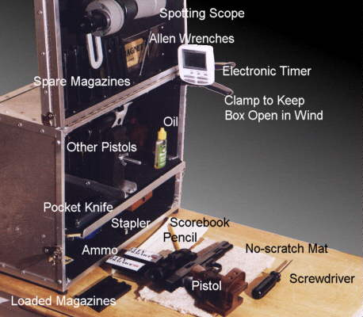
Selecting a .45 Caliber Target Pistol
If your plans are to shoot only .22 Caliber Gallery events, you will not need to consider the purchase of a .45 caliber pistol. You should skip down to the section titled: Selecting a .22 Target Pistol.
Purchasing a .45 caliber target pistol might be the most expensive investment you make in this sport. So make it count.
The typical pistol for .45 caliber matches is an accurized 1911A1 model or variant with pre-series 80 internals. View this excellent article by Master Pistolsmith Larry Leutenegger covering everything you need to know about accurized pistols.
There are probably only four ways to obtain that competition-ready accurized pistol:
Mass-Produced Custom Model Pistol
Pistolsmith Hand-Built Model from New Parts
Stock Pistol Accurized by a Pistolsmith
Stock Pistol with a Do-It-Yourself Job
In the "MPC" group, the manufacturer uses engineering and machining advantages to build the pistol from the ground up. The frame and slide are manufactured in house and tolerances are extremely small. With fewer steps in the accurization process to be done by hand, the manufacturer can produce more pistols annually with reasonable wait times. And while they are extremely accurate and stay that way for a long time, the trigger action from the factory might need a touch up by a qualified pistolsmith.
In the "Pistolsmith Hand-Built" group, the qualified pistolsmith selects a quality frame and slide and all other parts. He assembles the pistol, fitting all of the parts using time-honored methods. The quality of the final product depends on his parts selection and hand-fitting skills. There can be enormous wait times for hand-built pistols, sometimes over 18 months. But depending on your pistolsmith, the wait may be well-worth it for the tremendous quality you receive.
In the "Stock Pistol Accurized" group, the shooter purchases a stock pistol (called a base gun) on his own and sends it to a qualified pistolsmith. At his shop he replaces the barrel and usually all parts of the internal action, closes tolerances, and works it over for function and trigger action. The quality of the final product,and the life-span of the pistol's accuracy not only depend on the parts selection and skills of the pistolsmith, but of the integrity of the materials in the base gun.
And finally, in the "Do-it Yourself" group, the shooter purchases a stock pistol and does his own accuracy job to save money. Oftentimes it is as simple as squeezing the slide in a vise and peening the rails, along with the fitting of a Kart Easy-Fit barrel. Brownell's carries drop-in trigger assemblies that simplify and reduce the time required in improving the trigger action. Results can vary widely and it is definitely harder than it looks, but I have seen some fellows obtain surprising accuracy even on their first attempt.
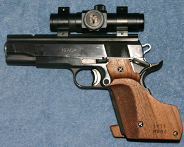
Pictured on the right is a typical .45 caliber pistol setup that you might find on any firing line. This particular pistol is a (MPC) Les Baer Bullseye model with their 1.5" group guarantee. Shortly after purchase, it was sent to pistolsmith Mike Curtis for a trigger action job. It has a short trigger with the addition of a trigger shoe. It has a slide rail scope mount with an UltraDot 1" model sight. The grips are by Thomas Rink through Larry's Guns.While mounting the dot sight directly upon the slide is the preferred method, it may also be mounted to a frame (bridge) mount, such as the Clark Scope Doctor mount.
Details such as frontstrap checkering or a beavertail safety are clearly optional, but they might make the pistol easier to shoot. Other additions such as an ambidextrous safety or a flared magwell are unnecessary expenses and no benefit to a bullseye gun.
Selecting a .22 Caliber Target Pistol
Competition-quality .22 caliber pistols come with all different shapes, sizes and price tags. Space limitations allow mention of the more popular options only.
THE ELITE: These pistols are prized for their tremendous design, light weight, superb and hightly adjustable triggers, outstanding accuracy and flawless reliability. The newcomer, the Feinwerkbau AW93 carries a hefty price tag of $2500 new. Flawless in almost every way except for a best method of attaching the dot sight. The Hmmerli 208s is the final and finest offering in the time-tested Walther/Hmmerli Olympic series. Now discontinued, a nice one can be found second-hand for about $2000. The Knapp scope mount is likely the best method for attaching a dot sight.
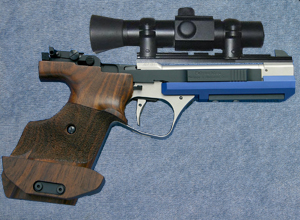 |
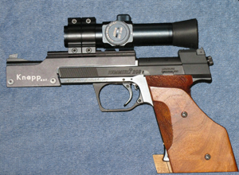 |
| Feinwerkbau AW93-L | Hmmerli 208s |
HIGH-PERFORMANCE: These pistols are top performers on the firing line. They are well-made and well-designed. The trigger action of both pistols is very good, but only adjustable for over-travel. The Smith & Wesson Model 41 has not changed since its introduction in 1957 and carries a price tag of $1000 new. Used ones can be found anywhere between $400 and $800. With the Sig/Hmmerli, modeled after the Olympic series, its Competition model with the 6" barrel sells for $1000 new. Recommended for either model is anatomical grips from Rink or Fung.
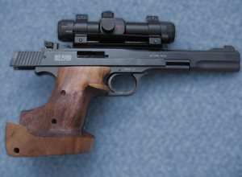 |
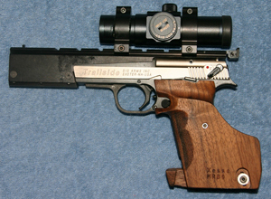 |
| Smith & Wesson M41 | Sig Trailside/Hmmerli X-esse |
CONVERTIBLES: This category contains .22 caliber setups that are convertible to another caliber and are equally accurate in either. In the tradition of Fred Kart and John Dworak who have made quality .22 conversion units atop the 1911 lower, Bob Marvel stormed the market with his super-accurate offering. For about $450 for a new conversion unit, you can convert a .45 caliber wad gun into a fine .22 with the same trigger action. Similarly, Walther, Hmmerli and Pardini all offer pistols that are convertible between .22 caliber and .32 S&W Long caliber. All three are of exceptional quality and have outstanding triggers that are adjustable in any way thinkable, but they are quite muzzle heavy in their balance. And with all three around $1700, plus another $900 for the conversion to the second caliber, they are not cheap either.
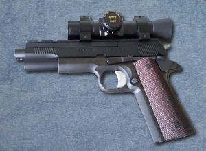 |
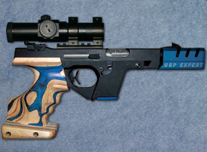 |
| Marvel Conversion on 1911 Frame | Walther GSP Expert |
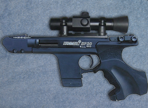 |
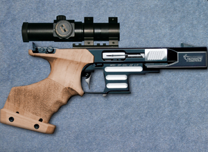 |
| Hmmerli SP20 | Pardini SP/MP |
MID-LEVEL PISTOLS: The following pistols are classified together only because they fall in the same price-range. The Walther SP22 series is a relative newcomer with its M4 version best suited for bullseye carrying a price tag of $600 new. While it is definitely odd-looking, it recoils softly, balances nicely and has a trigger adjustable for creep and weight. The High Standard pistols are truly the last of a dying breed, and after the company changed hands three times, their pistols have some real pluses and minuses. On the plus side, they have nice triggers adjustable for weight and a frame that feels exactly like a 1911. On the minus side is finish, reliability, parts availiability and service. But, if you're willing to take a chance, a new High Standard Victor could be yours for $850.
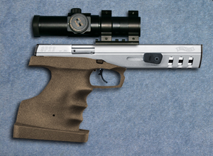 |
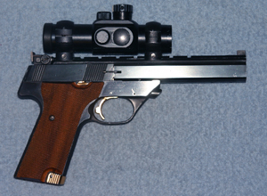 |
| Walther SP22 M4 | High Standard Victor |
ENTRY-LEVEL MODELS: If you are new to the sport, there are two models of well-performing pistols that are a small investment to purchase new. Of the two, the Ruger MkI or MkII at $350 has been around a lot longer and its track record of accuracy and reliability is excellent. A trigger action job or a drop-in kit from Volquartsen makes it quite a competitor. The Browning Buckmark at $400 is another option with a variety of barrel options available. A trigger action job will benefit it as well.
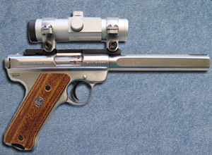 |
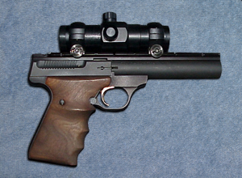 |
| Ruger Mark I or II | Browning Buckmark |
Extra Magazines
It is a good idea to have extra magazines for several reasons. The obvious one is to have a replacement if one stops functioning during a match. Another is to allow you to preload several magazines during a target change so that you are not rushed between two strings of timed or rapid fire. Some fellows take this to an expensive extreme and have a magazine preloaded for EVERY string of the match! On the other hand, a large number of top competitors feel more comfortable using a single magazine and loading it before each string; by keeping their empty backup magazines out of view, they avoid the mental error of inserting an empty magazine. I prefer to reload only two magazines at a time after every stage.
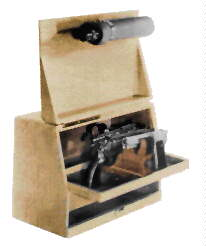
By design, competition pistol boxes solve several problems. First, they allow secure storage and transport of your valuable firearms in a lockable case. Second, they provide the space and means to keep all your shooting accessories organized and handy at the firing line.Pictured on the left is the "classic" design of the Pachmayr competition pistol box. This style remains the most popular among bullseye shooters as it still dominates the firing lines nationwide. In this design, the opened lid serves as a stable and easily accessable holder for your spotting scope. This and other designs of pistol boxes are designed to accomodate the organization needs of the competitive pistol shooter at the firing line. It is simply your decision to find the case that is right for you.
Competition pistol boxes vary greatly in both price and workmanship. The least expensive boxes are made of vinyl-covered plywood such as those by Gun-Ho. At the other end of the price spectrum, you will find durable aluminum boxes that will last a lifetime of abuse.
If the funds are not there for a specialized competition box, a foam-lined gun or photo case, a briefcase, or even a cardboard box may suffice in the meantime!
A spotting scope is an invaluable tool for the
target shooter. It allows you to verify where each shot hits in
slow fire and where your five shot strings group are in timed and
rapid fire. You will want a scope of the 20x or 25x power and the
largest objective lens and BEST SHARPNESS you can afford. This is
a one time investment that is worth spending a few extra bucks.
An inexpensive scope will cause eyestrain and will make seeing
.22 holes at 50 yards difficult or impossible.
Gil Hebard manufactures a handy gadget that attaches your scope
to the inside of the lid on your pistol box. This gadget allows
you to place the scope in just about any position imaginable,
accommodating the height of any shooting bench (or shooter for
that matter).
Ear and
Eye Protection
If you are blessed with good vision and you don't already wear glasses, you will need to buy shooting glasses. Protection from a rare shattered case fragment or bullet splatter from the backstop easily justify the expense of glasses. As another benefit, yellow-tinted lenses will slightly improve contrast outdoors and may seemingly brighten and clarify the target. You may find that you prefer clear lenses on a normal day and grey lenses in extreme bright sunshine. Regardless of color, the QUALITY of the optics is the most important factor. Inexpensive safety googles from the hardware store would not be of high quality.
Ear protection is equally important! Besides preventing the obvious long-term damaging effects of gunfire, maximum ear protection will help eliminate flinching. The unmuffled roar of gunfire during rapid fire would cause ANYONE to get a little shaky! You have several options in this matter: (inside-the-ear) earplugs, (over-the-ears) ear muffs, or as I recommend, BOTH. Don't consider any product with less than 20dB of reduction as ear protection. Hearing protection is inexpensive and is readily available at your local hardware store.
Another item that will assist in optimizing your vision is a cap. The bill of the cap will keep light from reflecting off the inside of your glasses and will also prevent an ejected case from the pistol of the shooter to your left from falling between your glasses and your face. An uncomfortable distraction at the least.
Electronic Stop Watch or Timer
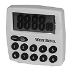
For under twenty dollars, you should purchase an electronic stop watch or timer. This little gadget will make sure that you make the best use of the time allotted in slow fire. Without it, you will probably shoot too quickly, wasting the opportunity to wait for the wind to stop blowing or for your arm strength to be restored after a shot. The inverse is a bigger problem, having taken too much time and still having two rounds left unfired at the end of ten minutes. Radio Shack makes an electronic timer that is not only two timers that operate independently in one unit, but they can be set to either count DOWN from a time you preset, or count UP from zero. I prefer to just reset it to ZERO and count up to ten minutes starting at the command "commence firing." Whichever method you choose, keep it simple and do it the same way EACH TIME.A scoring overlay, a clear piece of plastic with "circles" of common bullet sizes, is a valuable tool in scoring targets. It allows you to determine whether those borderline shots are actually touching the scoring ring. Some overlays have a small arc of a few inches of the four innermost rings of the target. Tight groups that make a big hole, thus "erasing" part of the scoring ring, can be scored by reconstructing the scoring ring with the overlay. A second overlay on top shows which shots are touching the "restored" ring. They are cheap. Get a set.
Tools for Repairs or Adjustments
A complete toolkit for your pistol is like the American Express card: Don't leave home without it! Make certain that you have every Allen wrench or screw driver you might need for every adjustable part on your gun. If you need to adjust your sights, you will have the proper size screwdriver for the job. If your optical sight's mount or one of your pistol's grip panels loosens, you can tighten it back up properly. A pocket or utility knife is also a valuable tool that shouldn't be overlooked, with two purposes being opening a new box of cartridges or prying a stuck case out of the chamber.
Another handy gadget to keep in your box is a 12" length of wooden dowel rod for clearing your barrel of a squib round. For the .45 caliber pistol, a 3/8" diameter rod is perfect for the task.
A properly cleaned and maintained gun will operate more reliably, produce greater accuracy and will wear more slowly than one that is not. Only a fool would risk losing a match with a double-alibi in rapid fire due to a dirty gun! The argument that regular pistol cleaning is unnecessary because the modern smokeless powders and non-corrosive primers are not caustic is really not valid - their residue is ABRASIVE and will cause wear during operation if not removed.
Similarly, a pistol should be lubricated, but never to excess. While the .45 caliber pistol might prefer quite a bit of lubrication, the .22 caliber pistol should be oiled at a bare minimum in only the proper places. Too much oil may attract dirt and residue and actually induce wear.
Here is an extensive list of essential cleaning supplies for the competitive shooter. They are inexpensive and readily available.
| Item | Description |
| Pull-Through | I suggest cleaning a .22 caliber bore with a pull-through and a patch only. I like the PatchWorm brand best. |
| Cotton Patches | Buy 100% cotton patches only. They clean and absorb better than miserable synthetic. Use the correct size! |
| Bore Cleaning Rod | A threaded aluminum rod long enough to reach from the breach to and beyond the muzzle. Aluminum is a good choice because it is a soft metal. |
| Brass Jag | A brass jag screwed onto your rod in conjunction with a cotton patch will do a phenomenal job of cleaning a bore, for any caliber pistol. |
| Copper Bore Brush | Not for .22 barrels, but you will absolutely have to run a brush with solvent through your centerfire caliber barrels, with extra attention to the rifling near the chamber. As a significant aid to accuracy, I run a brush through my .45's bore periodically during the course of a match as well. |
| Toothbrush | Your basic straight dental toothbrush will gently clean just about any part of your gun. |
| Cotton Swabs | Indispensable for cleaning hard to reach places. I buy medical swabs on long sticks from a company called Lab-Safety Supply. They're great! |
| Tooth Picks | A great no-scratch tool for removing crud in corners and grooves. |
| Gun Scrubber | It ain't cheap, but it does work fast. A few squirts on the inside of the .45 slide and presto! Don't get it in your eyes or on your skin! |
| Hoppes No. 9 or Kerosene |
A super solvent that lifts away powder and lead residue from parts and leaves them clean and rust protected, with no gritty residue. A less expensive and still very effective alternative is kerosene. |
| Shooter's Choice Lead Remover | An indespensible product for removing stubborn lead buildup near the chamber of centerfire barrels. Dab a little and wait a few minutes, use a brush then a patch. Rinse with a solvent like Gun Scrubber or Hoppes. |
| Gun Oil | I use a thinner oil (like RemOil) during the colder months and a thicker oil (like Hoppes) during the hotter ones. Otherwise, oil is oil. Go sparingly. |
Competition Targets for Practice
While targets are furnished by the officials at a competition or league event, you must provide your own when you practice. You should always practice with the correct targets intended for the event you are shooting. Not doing so may create bad habits and a variety of sighting problems, and it will give incorrect scoring feedback of your shooting. The official targets are not expensive, and you'll appreciate firing on real "tag board" targets as opposed to trying to print your own.
The official NRA targets for conventional pistol are as follows:
| Outdoor Competition | ||
| Range | Match/Stage | NRA No. |
| 50 yd 25 yd |
Slow Fire | B-6 |
| Timed & Rapid Fire | B-8 | |
| 25 yd | Slow Fire (Short Course) | B-16 |
| Timed & Rapid Fire | B-8 | |
| Gallery Competition | ||
| Range | Match/Stage | NRA No. |
| 50 ft | Slow Fire | B-2 |
| Timed & Rapid Fire | B-3 | |
| 20 yd | Slow Fire | B-4 |
| Timed & Rapid Fire | B-5 | |
| 25 ft | Slow Fire | TQ-6 |
| Timed & Rapid Fire | TQ-7 | |
Selecting
.22 Caliber Ammunition
The task of selecting ammo for your .22 pistol is an important one. Regardless of the pistol, the following factors must be considered in the selection process:
If a certain ammo does not function well in your pistol, change to another. It is the only of the three factors of which you have no control. Beyond that, selection is really a matter of how much accuracy you can afford. Fortunately, even some of the most inexpensive cartridges still produce satisfactory groups. View this article for the best practices for conducting your own Ammunition Accuracy Test.
Reloading Your Centerfire Ammunition
It is not necessary that you reload your own centerfire cartridges, but chances are good that you will if you shoot bullseye for any length of time. One reason is economic. Match ammunition is expensive; $30 is a pretty good starting point for a box of 50 rounds of .45 ACP match ammo. If you shoot double .45 in a 2700 match, you'll need four boxes to cover the CF and 45 phases, plus a little reserve for alibis. Most shooters quail at the thought of spending $120 on ammunition for a single match. Reloading can help reduce those costs, or at least give you more ammo for the same amount of money. Reloading typically costs from $.12 to $.30 per round (for .45 ACP), depending on component selection and how many times you re-use your brass. This puts the cost of a 50-round box somewhere between $6.00 and $15.00, which looks pretty good compared to factory match ammo.
Reloading can also help you realize your gun's potential. Each match gun is a unique, finely fitted machine with unique tastes in ammunition. Reloaders can vary powder charges and change bullet seating depths and crimp diameters, all of which will affect a load's performance. With enough experimentation you can find the load that extracts maximum accuracy from your pistol.
When selecting a press you need to consider several things. First, think realistically about how much reloading you'll be doing. If you're only going to reload 200-400 rounds a month, you may be able to get by with a single-stage press. If you're planning on reloading much more than that, you may be happier with a progressive. Progressives are much faster - an experienced user can load 500 rounds or more in an hour with a progressive, versus 100-200 rounds with a single-stage press. Progressives are also capable of producing match-quality ammunition, just like a single stage. Some people recommend that beginning reloaders start with a single-stage press, due to the greater simplicity of the machine. Others started reloading on progressives and have had no problems mastering the process.